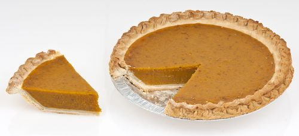

Pumpkin Pie

Description
Ingredients
- 1 (9 inch) unbaked pie crust
- 1 (16 ounce) can pumpkin puree
- 1 (14 ounce) can sweetened condensed milk
- 2 large eggs
- 1 teaspoon pumpkin pie spice
Steps
- Gather all ingredients
- Preheat the oven to 425 degrees F (220 degrees C)
- Fit pie crust into a 9-inch pie dish and place it on a baking sheet
- Combine pumpkin puree, condensed milk, eggs, and pumpkin pie spice in a large bowl; mix until combined
- Pour mixture into the pie crust
- Bake in the preheated oven for 15 minutes. Reduce heat to 350 degrees F (175 degrees C) and continue to bake until filling is set, 35 to 40 minutes
- Remove from the oven, set on a wire rack, and cool completely before serving
- Enjoy!